麻豆代天府で参詣を済ませた後向かったのは鹽水という街。
ここに奇天烈な教会があるというのだ。
情報ソースはこちら


台湾迷路案内/松田義人
台湾の面白いスポットや店、さらにはレンタカーの使い方まで説明している本で、ある意味今回の旅の原動力ともなった本だ。
特にお寺関係は充実しており、本サイトでもお馴染みの
鳳山寺や
麻豆代天府、
南天宮、
金剛宮、
佛光山、
龍鳳宮、
五穀先帝宮，
頂山寺、
慈明寺、
中世公園、
秋茂園などの珍寺以外にもディープな廃墟や市場などが目白押しなので、台湾に行かれる方は是非目を通していただきたい（推薦図書）。
実はこの直前に訪れていた
麻豆代天府からここ鹽水までの足が無くて難儀していたら、代天府のスタッフのおじさんが「乗せってってやるよー！」と車を出してくれた。
本当に有難いことだ（ついでに天主堂見た後、最寄りの駅まで乗せってってもらった。さらに鹽水までの道中にあるステキなお寺にも寄り道してもらった。もちろんそれなりの謝礼はしましたよ！）。
…というわけで鹽水という街に着いた。
鹽水とはつまり塩水のことで、海が近いのかと思えばそんなことはない。
では、しょっぱい街なのかといえば、
まあ、それなりにしょっぱい感じの街ではあった。
目の前にはこんな建物が。
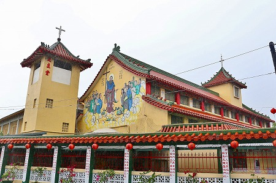
十字架があるから、キリスト教会なのだろう、ということは理解できる。
しかしこの建物の様子は如何だろう。
赤い瓦屋根に黄色い壁、塀には赤い提灯がぶら下がっており、まるでお寺のようではないか。
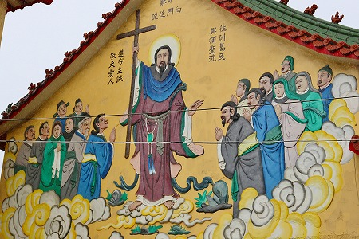
いやいや、壁にはキリスト様の絵が描かれてるじゃない、とは思うものの、妙な予感しかしないぞ。
結局その予感はものの見事に的中することが数分後に判明するのだが…。
やけにアグレッシブな門を潜って境内に入る。
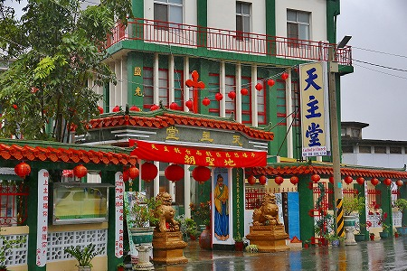
それにしても本当にココってキリスト教会なんだろうか？
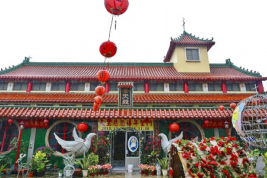
祭天殿という額が架かったところが、本堂、じゃなくて天主堂のようだ。
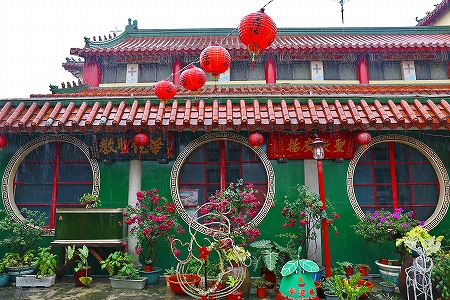
丸窓に赤提灯だもんなあ。
で、中に入ってみる。
ちなみに運転してきてくれた麻豆代天府のおじさんも物珍しそうに一緒に入ってきた。
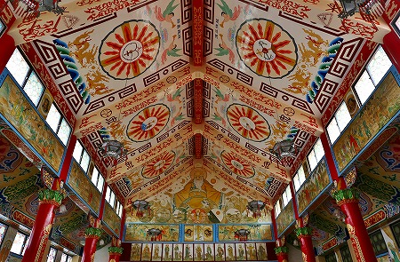
うっひゃー！
カトリックの教会とは思えないカラフルな内装！
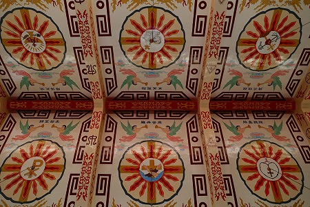
しかもひとつひとつの装飾のアイテムがことごとく中華風。
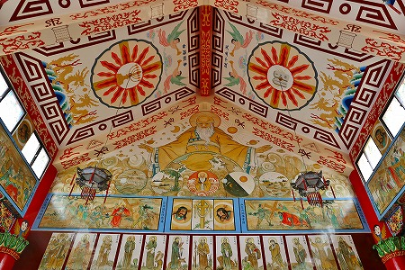
さらに描かれている人物も道士のような恰好をしているじゃないか！
これはつまりアレか。キリスト教の聖者が伝統的なチャイニーズスタイルで表されているのか。
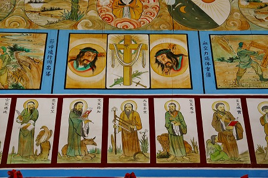
これは面白いなあ。
知識としては例えば現地の恰好をしたキリストやマリアが世界各地に存在する、というのは聞いたことはあったが、実際に見てみると違和感しかない。そこまで寄せなくても…。
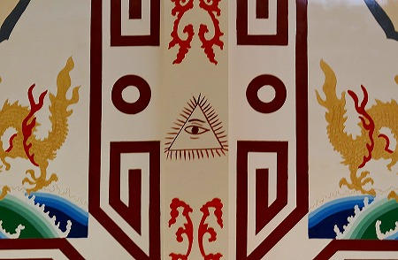
装飾の合間に
あのマークまで。
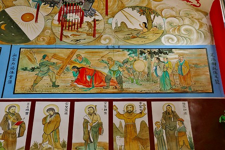
脇の壁面にはキリストの捕縛から埋葬までのシーンが描かれている。
その下の段は中国での殉教者らしい。
気がつけば、麻豆代天府から運転してきてくれたおじさんがゲラゲラ笑っている。
まあ、気持ちは判るが笑いすぎだぞ。
そして自分が「麻豆代天府」とでかでかとプリントされたウインドブレーカーを着ていることを忘れてるんじゃなかろうな。
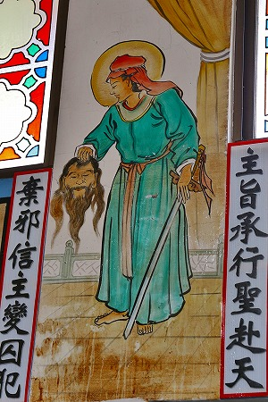
とはいえやはり面白い。
この生首持った絵とか凄いよね？
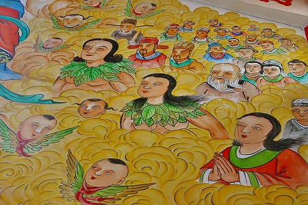
右の女性とか合掌しちゃってるもの。
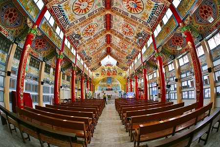
まるで宮廷建築だな。
あまりの混沌具合にしばし椅子に座り込んでしまった。
おじさんも初めてらしく（そりゃそうだ、そもそも道教の人だし）、興味津々に上を眺めていた。
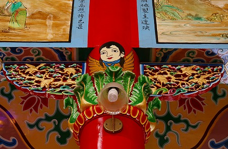
柱の上部にはカワイイ中華天使の姿が。
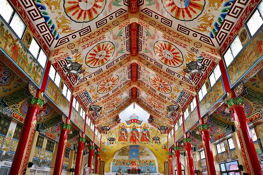
天主堂の一番後ろから眺める。
天上の丸いデザインは中華風でもあるが、どこか台湾の少数民族をも惹起させる大胆で荒々しいデザインだ。
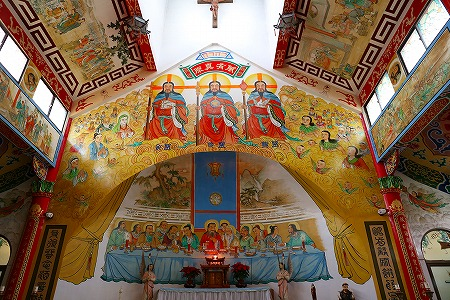
で、正面。
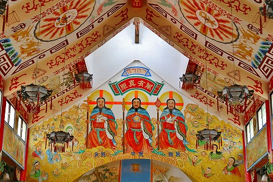
正面上にはステキな漢福をお召しになった三位一体の絵が。
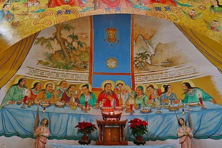
その下にあるのは…これって
最後の晩餐…すか…？
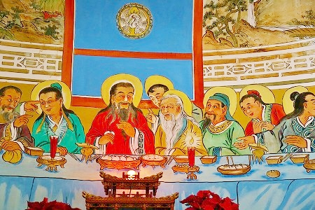
キリストが弟子たちと食事をしているのだが、恰好は漢服、食ってるのは饅頭、飲んでるコップは爵ですから！
まさかキリストさま本人も約2000年後に肉まん（かどうかは知らないが）食ってる絵を描かれるとは思ってもみなかったろうなあ。
そしてみなさん髭が立派！
調べてみると、この教会は1955年にドイツ人のフランシス会士によって開かれて、この祭天殿が完成したのは1986年だという。
ちょっと待ってくれ。
1986年とな。
意外と最近じゃないか。てっきり、前々々世紀辺りに竣工した建物かと。
日本でいえばバブル期でおにゃんこクラブでボディコンでニューアカでポストモダンな時代だったはずだよね？
でも考えてみりゃ、これもまたポストモダンの一形態と考えられなくも無きにしもあらず、ん？
アバンギャルドモダンという文明が一旦、落ち着いて懐古趣味を取り入れるのが世界的な潮流だった1980年代（少なくとも美術と建築の学校ではそう教わったっぞ）、おもいきし中華の伝統的な建築様式とキリスト教を並立させる手法は確かにポストモダンといえなくもないが、やっぱりその強引さはポストモダンというよりリンゴにペンをムリクリぶっ刺すPPAP的な手法としか言いようがないな。
ああ、こうやって書いててポストモダンよりもPPAPの方が懐かしく感じちゃうのは何でやー！
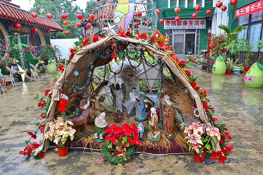
お外には厩で生まれたキリストのジオラマが。
1月って日本以外クリスマスの余韻がまだ残ってるよね。
次へGOGO！